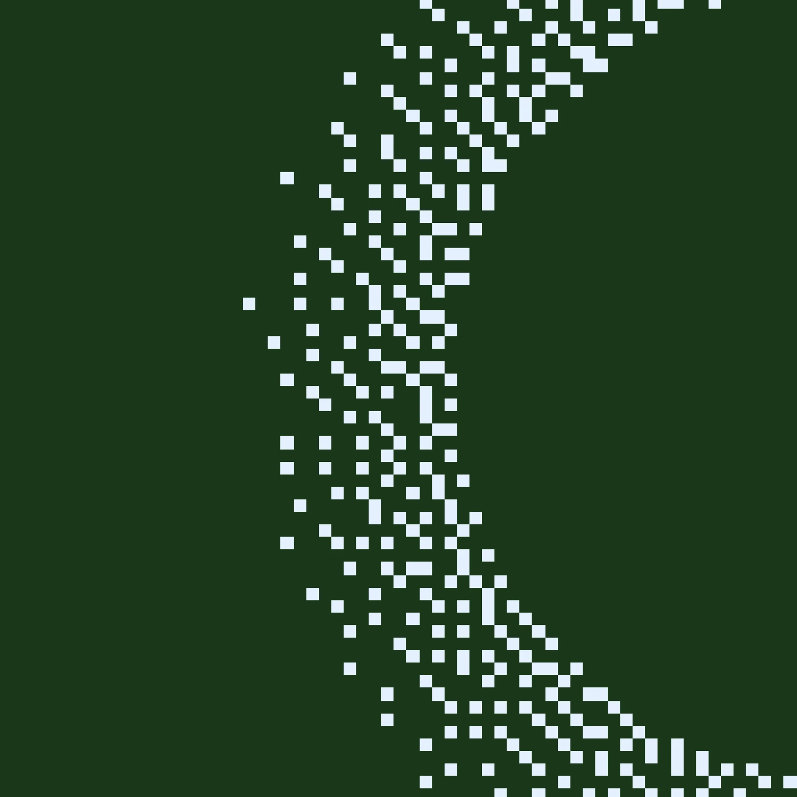

La curva del olvido
Existen muchos métodos de estudio diferentes, cada uno con sus propias ventajas y desventajas. El mejor método para ti dependerá de tu estilo de aprendizaje y de tus necesidades específicas.
Productividad
Aprendizaje efectivo
 Volver al Blog
Volver al Blog
